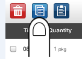

The Food Summary page includes a "Copy" icon button (the middle icon) on the top left of the screen:
This "Copy" button will be disabled (gray) until you select at least one food item (checkmarks will appear next to selected items). Once you have selected the food item(s) you would like to copy the "Copy" icon button will become blue:

Click on this middle blue button to copy the selected records. Navigate to the day you would like to paste the copied consumption record(s) to and click the paste button (3rd button):